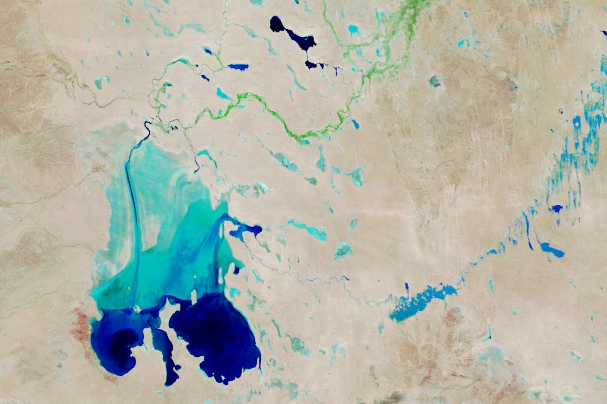

Cooper Creek Replenishes Lake Eyre
Since late March 2025, floodwaters have streamed hundreds of kilometers across the Australian outback toward Lake Eyre (Kati Thanda-Lake Eyre). Located in the continent’s most arid region, the lake is a dry, salty plain much of the time. Although one-sixth of Australia drains toward it, much of the water evaporates during the long journey across Channel Country before ever reaching the lake.
The situation changed dramatically in 2025 when, starting in the Southern Hemisphere’s fall, abundant rainfall in Queensland flooded several rivers that flow toward Lake Eyre. In early May, satellite sensors detected water from Warburton Creek and other river channels starting to pour into the lake from the north. Within weeks, water had reached the lake’s deepest areas—two bays in the southern part of the lake, some 120 kilometers (75 miles) away.
The spectacle continued to unfold for several more months. Floodwaters in Cooper Creek, another large tributary, began filling Lake Eyre from the east in late July, while flows from other rivers slowed. The images above show this shift in contributing tributaries and the changes in the lake’s extent. They were acquired with the MODIS (Moderate Resolution Imaging Spectroradiometer) on NASA’s Terra satellite and are false-color to emphasize the presence of water and vegetation.
Note how Warburton Creek appears blue in mid-June (left), indicating water was flowing, and then green in mid-September (right), suggesting the river flow had waned and vegetation had emerged in the riverbed. During the same time, Cooper Creek went from dry to flooded as water worked its way west through Lake Killamperpunna and ultimately to Lake Eyre. The northwest part of Lake Eyre became drier, while its eastern side expanded.
Cooper Creek, at 1,420 kilometers (880 miles) long, is the second-longest inland river system in Australia, but its flows are highly variable. Floods of the magnitude seen here are relatively rare; the river connected with Lake Eyre eight times during the 1900s, according to one study, as well as in 2011.
When water is flowing, a profusion of wildlife follows. Invertebrates such as brine shrimp proliferate and supply food for fish, and colonies of waterbirds such as pelicans, cormorants, and terns flock to the vast wetlands to take advantage of the bounty.
Though a boon for wildlife, Cooper Creek’s flooding caused damage and disruption to communities along its path. In March, hundreds of kilometers away from Lake Eyre, floodwaters inundated pasturelands and blocked roadways, leaving towns isolated.
In late June, as the flood progressed downstream, Cooper Creek submerged a several-kilometer-long stretch of an outback road called the Birdsville Track west of Lake Killamperpunna and further restricted access to outback communities. Making the best of a difficult situation, sailors can test their skills in a regatta planned for late September in which racers aim to stay within the road markers along the flooded portion of the track.